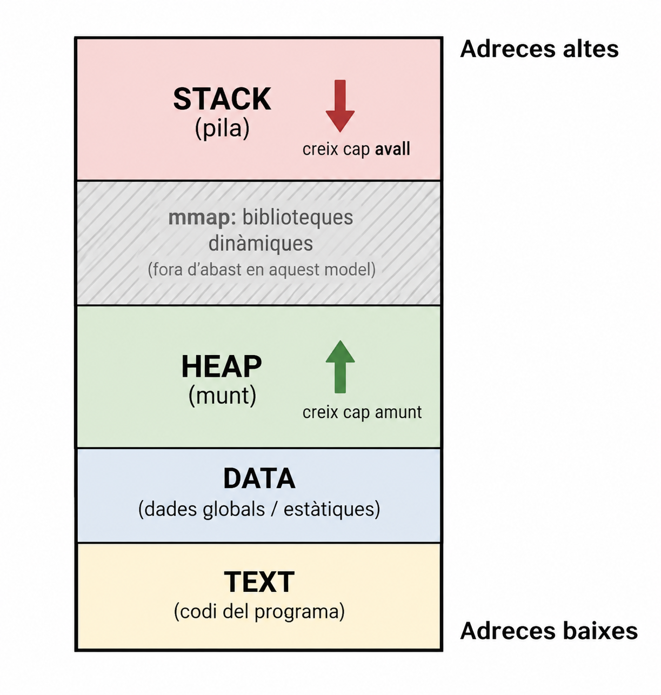
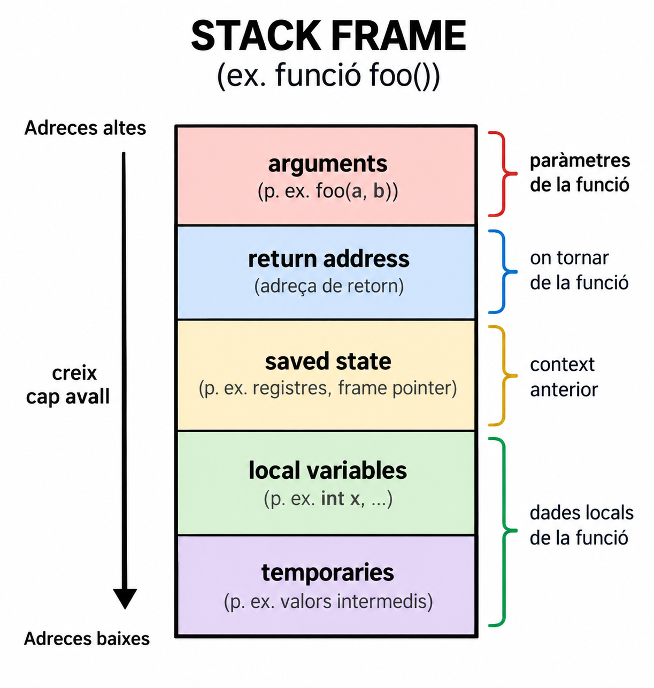
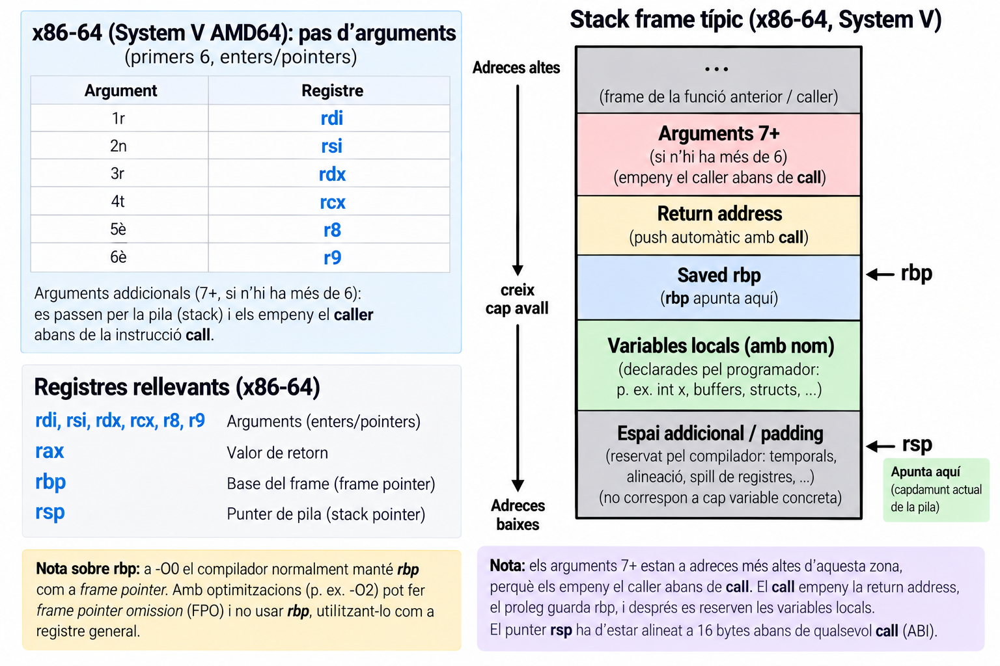
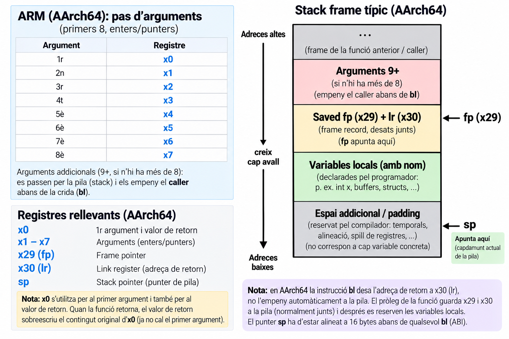

Bloc 1 · Desenvolupament de Programari en Espai d’Usuari
Stack · Heap · Data · Text

Aquest és un model conceptual, no el mapa físic de la RAM. Les adreces que fa servir el procés són adreces del seu espai virtual.
Aquest model omet la regió mmap (biblioteques compartides), l’espai de kernel i qualsevol detall d’ASLR (Address Space Layout Randomization). Les adreces reals no són fixes ni predictibles entre execucions. Ho veurem més endavant quan parlem de memory allocators.
La funció suma() és una variable?
Text segment: la zona de l’espai d’adreces on viuen les instruccions executables del programa.
Aquestes variables viuen a la regió DATA de l’espai d’adreces.
Variables globals i static tenen una vida que s’estén durant tota l’execució del procés \(\Rightarrow\) no depenen de cap crida de funció.
\(\text{Stack} = \text{variables automàtiques} + \text{informació de les crides}\)
Stack: regió de memòria utilitzada per gestionar les crides de funcions i les dades automàtiques associades a aquestes crides.

La disposició exacta d’un stack frame depèn de l’arquitectura i de la convenció de crida (calling convention).
Els arguments no sempre van a la pila. En x86-64 (System V AMD64 ABI), els sis primers arguments enters es passen per registres (rdi, rsi, rdx, rcx, r8, r9), no s’apilen. El detall complet el veurem a la propera sessió.
foo() → crea frame → x existeix → foo() retorna → frame desapareix → x deixa d’existir
El lifetime d’una variable automàtica està lligat a l’activació de la funció, no al programa sencer. Això serà essencial per entendre el heap.
create() → x = 42 → return &x → frame desapareix
Estem retornant una adreça que correspon a una variable automàtica que ja no té una activació activa. El punter resultant és penjat (dangling).
L’adreça sobreviu, la variable no.
Heap: regió per a objectes amb lifetime controlat manualment, o amb una mida no coneguda en temps de compilació.
p és una variable local (al STACK). La memòria que apunta és una reserva dinàmica (al HEAP) \(\Rightarrow\) són dues coses diferents.
malloc() reserva memòria al HEAP; free() la retorna com a disponible.
Tot malloc() hauria de tenir el seu free() corresponent. Encara no cal saber com funciona per dins (brk, sbrk, bins, fragmentació) \(\Rightarrow\) hi tornarem quan parlem dels memory allocators.
Classifica: foo(), global, x, p, *p
| Element | Regió |
|---|---|
foo() |
TEXT |
global |
DATA |
x |
STACK |
p |
STACK |
*p |
HEAP |

call apila l’adreça de retorn; ret la desapila.rbx, rbp, r12-r15) es guarden si es fan servir.El retorn sempre s’apila automàticament. Cert en x86 (call/ret), fals en ARM: bl només escriu lr; és la funció qui decideix si cal desar-lo.

call/ret equivalent implícita: bl desa l’adreça de retorn al registre lr (x30); cal desar-lo explícitament a la pila si la funció fa una altra crida.El retorn sempre s’apila automàticament. Cert en x86 (call/ret), fals en ARM: bl només escriu lr; és la funció qui decideix si cal desar-lo.